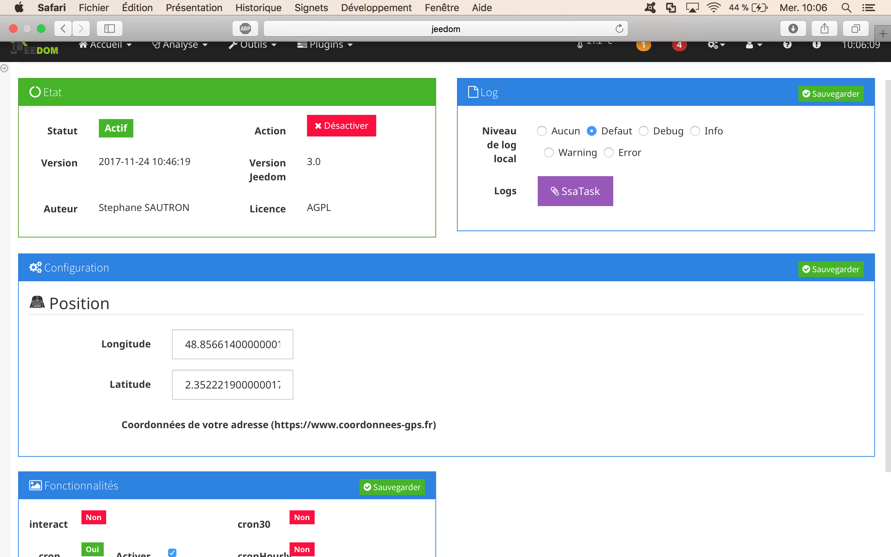
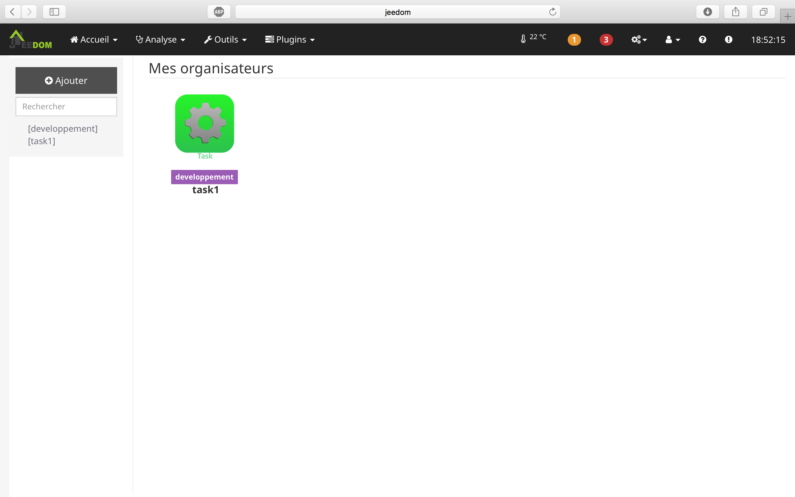
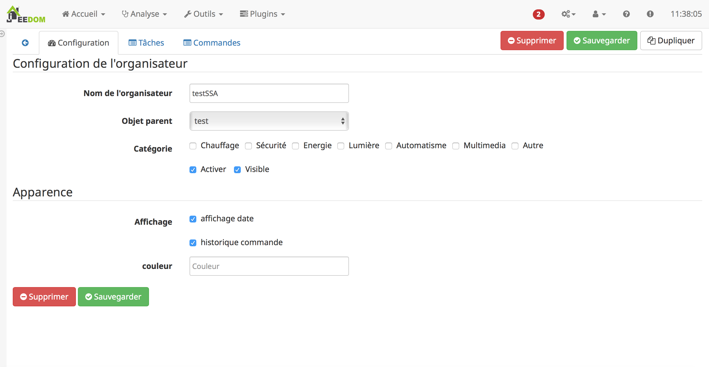
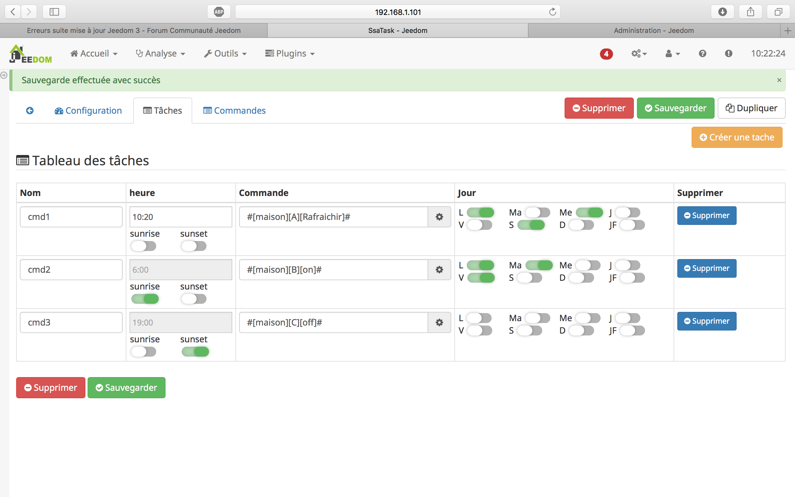
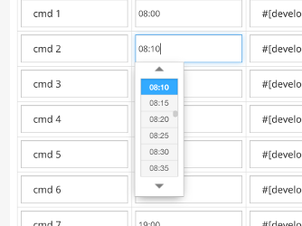

Description
Ce plugin propose d’automatiser les tâches que vous effectuez régulièrement. Apres avoir planifié les tâches (heure et jour de la semaine), elle seront alors exécutées automatiquement et vous pourrez les suivres dans la Timeline du plugin.
il sera alors aisé de programmer l’ouverture de vos volets roulant tous les jours à 7h du matin sauf les WE et jours féries. et cela juste en deux clics.
Figure 1. vue desktop

Figure 2. vue mobile

Figure 3. vue mobile

Figure 4. historique
Installation
Il n’y a pas d’actions particuliere lors de l’installation du plugin.
Configuration du plugin
Apres le telechargement du plugin, il vous suffit juste d’activer celui-ci, il n’y a aucune configuration a ce niveau.
Pour calculer l’heure de levé et de couché du soleil, le plugin utilise votre position gps. Par default, le plugin utilise la position de paris. Vous pouvez modifier cette coordonnée. la page https://www.coordonnees-gps.fr permet de retrouver facillement une coordonnée GPS à partir d’une adresse.

Configuration d’un ssaTask
La configuration des équipements "ssaTask" est accessible à partir du menu plugin : il vous suffit de cliquer sur le bouton "ajouter" ou sur un équipement déjà présent.

La configuration des Equipements "ssaTask" s’effectue par en trois onglets :
-
configuration
-
tâches
-
commandes
Onglet "Configuration"
Cette première étape, commune aux plugins Jeedom, consiste au réglage des paramètres généraux du "ssaTask"

| Cette étape permet de définir, l’objet parent, l’activation et la visibilité du "ssaTAsk", ainsi que les informations habituelles. |
Cet onglet offre aussi la possibilité de définir le comportement visuel du plugin grace aux cas à cocher :
-
affichage date
-
affichage historique
-
couleur de fonds
Onglet "Tâches"
Cet onglet permet la programation de vos différentes commandes.

| Imaginons que vous voulez allumer la lumiere tous les matin à 7 heures et ouvrir les volets à 7 heures trente, rien de plus simple. |
| Pour créer une tâche, il faut cliquer sur le bouton "Créer une Tâche". Cela ajoute alors une tâche vide dans la liste des tâches. |
Configuration
Rien de plus simple. commencez par donner un nom à votre tâche et fixez les différents paramètres
Heure
Il s’agit ici de definir l’heure d’exéution de votre commande. L’heure peut etre definit de manire automatique avec les boutons sunset et sunrise (l’heure correspondant a sunrise et sunset est calculé tous les jours à 1 heure du matin).

| Vous pouvez utilisez les boutons pour diminuer l’heure et les minutes ou les entrer directement à l’aide de votre clavier. |
| les boutons "sunrise" et "sunset" permettent d’indiquer au plugin d’exécuter la commande au levé ou au couché du soleil. |
Commande
| il s’agit dans cette section de configurer les commandes qui devrons etre executés. |
| Pour configurer une commande, il faut utiliser le bouton "Rechercher un équipement". Les commandes disponible sont des commandes de type "Action". |
|
Dans le cas ou vous voulez exécuter plusieurs actions il faut indiquer les differentes commandes avec le séparateur "&&". Dans mon exemple, j’ai deux radiateurs et j’indique donc : |
Commande ON :#[developpement][radiateur1][On]#&&#[developpement][radiateur2][On]#
Jour d’application
il s’agit ici d’un planning d’application de la tâche. Vous pouvez choisir d’executer votre commande le lundi, le samedi ou les jours fériés.
Onglet "Commandes"
Le plugin propose, par defaut, 5 commandes. Vous ne pouvez pas modifier ces commandes. Elles permettent d’interagir avec l’IHM.
| les commandes peuvent etres appelées à partir de vos scénarios ou autre modules. : |
Mode d’emploi du ssaTask.
L’utilisation du ssaTask est simple et intuitif. Le composant dispose de deux boutons "on" et "off".
Ces dex boutons permettent d’activer et de desactiver le planning.

Figure 5. vue desktop
|
guide
|
|
Figure 6. Statistique
|
guide
|
|
Figure 1:normal
|
Il s’agit ici de la vue nominale |
|
Figure 2:historique desactivé
|
cette vue est disponible lorsque |
|
Figure 3:date désactivée
|
cette vue est disponible lorsque |

Figure 4:minimale
|
cette vue est disponible lorsque |
FAQ
-
maj plugin
-
lors de la mise à jour vers la version 04, il est conseillé d’effectuer une desactivation puis une reactivation du plugin
-
-
calcul sunset & sunrise
-
le calcul du levé et couché de soleil est effectué à 1 heure du matin. Pour les nouveaux ssaTask,
-
il se peut que le calcul n’ai pas encore ete effectué. Le plugin utilise alors une heure par defaut.
-
les heures seront mis à jour des le prochain calcul
-
Developeur
974steph
Changelog
version : 04 (janvier 2018)
-
ajout des fonctions sunset et sunrise
version : 03 (6 decembre 2017)
-
correction timeline
version : 02 (dec 2017)
-
ajout foncion dupliquer
-
ajout configuration de la couleur de fonds
version : 01 (nov 2017)
-
version initiale